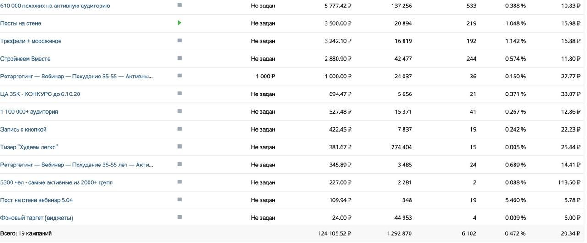
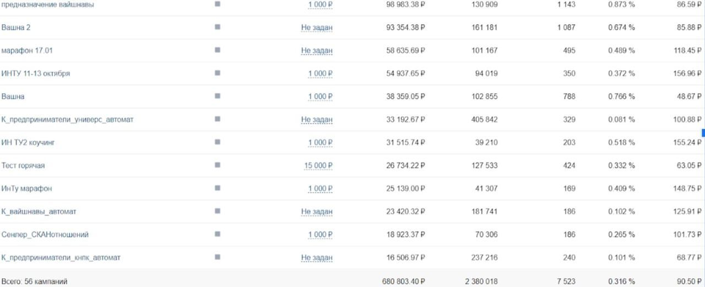
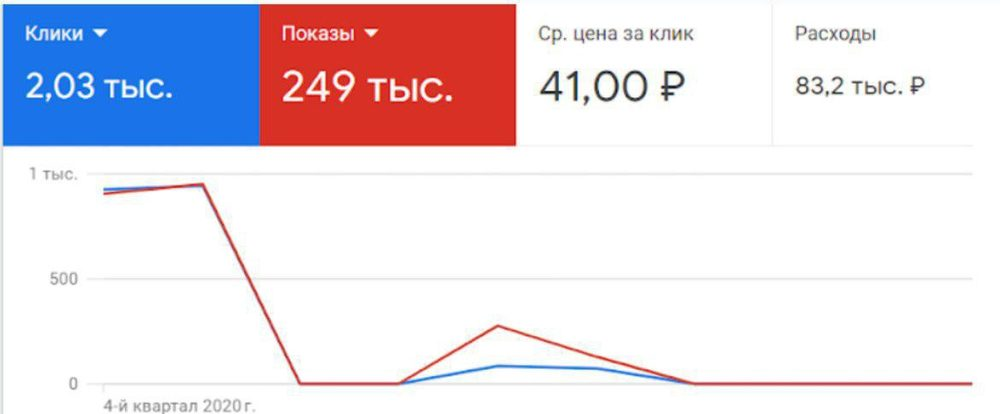
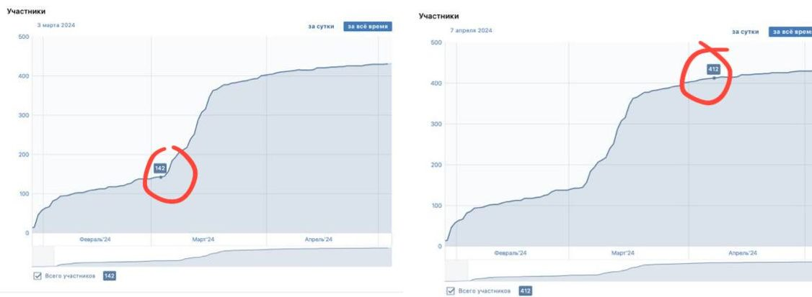
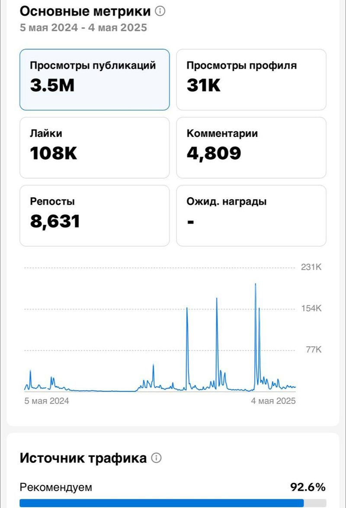
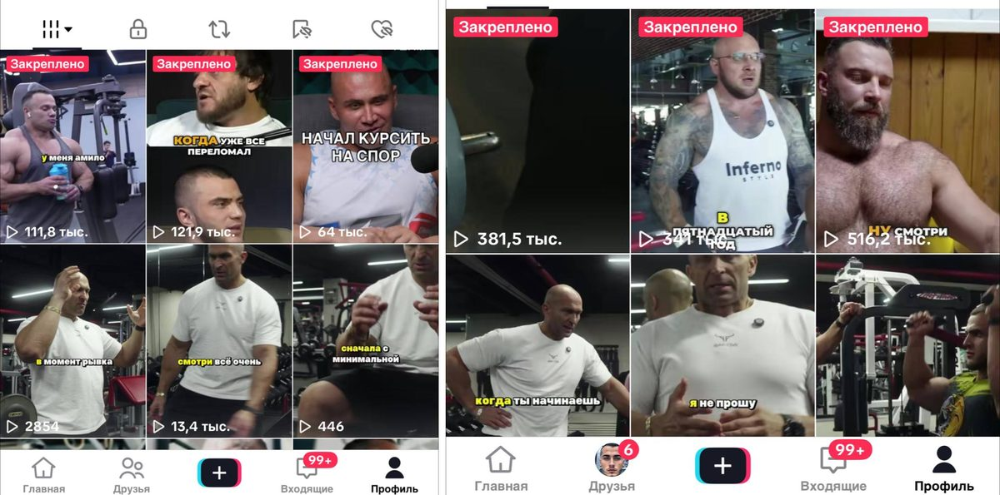
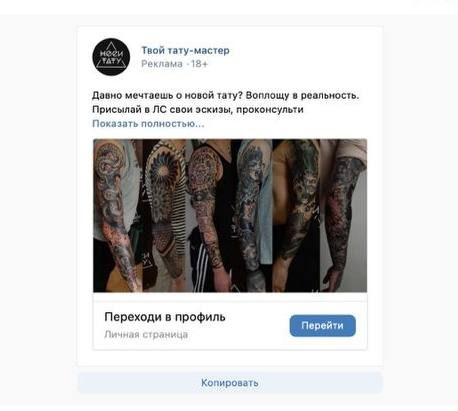

Кейсы с цифрами
Бюджеты, результаты и скриншоты рекламных кабинетов. Всё, что здесь указано, видно в статистике.
Результаты
Большой ведический практикум4 воронки, 2020–2023
VK, Instagram, YouTube и Telegram. Два запуска: 4 448 и 2 820 лидов. В Telegram +1 000 в канал и +1 000 в чат.
130 оплат по 72 000 ₽
Концерт Раджа Риши, Москвалендинг, таргет
Лендинг, таргет ВК 55 000 ₽ и РСЯ 20 000 ₽.
Тату-салон «Носи тату», Тверьтаргет ВК + Senler
Таргет ВК на Senler с бюджетом 8 000 ₽. Заявки с эскизами, запись на полгода вперёд.
Концерт ОдноНобилеты
Бюджет 25 526 ₽. Полный зал, как и планировали.
OXY TEAM, посевыспорт, 2022–2026
Поиск блогеров и каналов в Instagram, Telegram и ВК, договорённости, тексты, контроль выходов.
за 4 года
Курсы похудения Ирины Доценкореклама
Бюджет 124 105 ₽, 6 102 перехода.
Бизнес-клуб SPD, вечеринка на БалиInstagram и Telegram-чаты
Instagram 10 000 ₽ и посевы в чатах Telegram 5 000 ₽.
100+ гостей
Онлайн-школа английского Светланы Сундарисоцсети с нуля
Соцсети с нуля, реклама в Telegram, пакеты занятий.
конверсия 90%
Голока пати, Санкт-Петербургконтент и розыгрыш
Месяц контента и розыгрыш, таргет 2 666 ₽.
Отель в Южной Индии, студия электроэпиляциисоцсети, сайт, видео
Соцсети с нуля (ВК, TikTok, Instagram, YouTube), сайт, съёмка и монтаж Reels.
Скриншоты кабинетов и статистика






